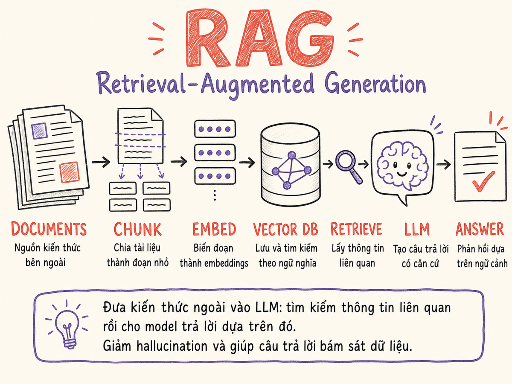

RAG — Retrieval-Augmented Generation
Kiến trúc cho phép LLM truy xuất kiến thức ngoài training data: từ chunking và embedding đến hybrid search, reranking, và advanced patterns như HyDE, multi-hop, GraphRAG.

7.1 RAG là gì, tại sao cần
RAG (Retrieval-Augmented Generation) là kỹ thuật bổ sung thông tin bên ngoài vào context của LLM ngay tại thời điểm inference, thay vì bake kiến thức đó vào weights thông qua training. Kết quả là model có thể trả lời dựa trên dữ liệu mới nhất, dữ liệu nội bộ, hoặc dữ liệu chuyên ngành mà nó chưa từng thấy trong quá trình train.
RAG = Retrieval System + LLM Generator — tách biệt "nơi lưu kiến thức" (vector store) khỏi "nơi reasoning" (LLM).
Ba vấn đề RAG giải quyết
- Knowledge cutoff: LLM không biết sự kiện sau ngày training. RAG cho phép dùng dữ liệu real-time.
- Private/internal data: Tài liệu nội bộ, codebase, wiki doanh nghiệp không có trong training data.
- Citable answers: Câu trả lời có thể dẫn nguồn cụ thể, giúp người dùng verify và tăng trust.
RAG vs Fine-tuning vs Long context vs CAG
| Phương pháp | Khi nào phù hợp | Hạn chế |
|---|---|---|
| RAG | Dữ liệu thay đổi liên tục, cần citation, corpus >1M tokens | Retrieval có thể miss; latency cao hơn; infra phức tạp |
| Fine-tuning | Style/format cố định, domain behavior, không cần citation | Không update được real-time; expensive |
| Long context | Corpus vừa trong context window (Claude/Gemini 1M tokens GA từ 2026) | Cost cao khi query nhiều; RAG vẫn tốt hơn ở recall chính xác |
| CAG (Cache-Augmented Generation) | Corpus nhỏ–vừa (<1M tokens), ít thay đổi, cần tốc độ cao nhất | KV cache tốn memory; không phù hợp corpus lớn/động |
| Kết hợp RAG + FT | Corpus rất lớn + domain style cụ thể | Phức tạp nhất, chi phí cao nhất; ~60% production 2025–2026 dùng cả hai |
CAG preload toàn bộ document vào context và cache KV trước, loại bỏ hoàn toàn retrieval runtime. Đạt tốc độ nhanh hơn đến 40× so với RAG. Phù hợp khi corpus vừa trong 1M-token window và không thay đổi thường xuyên. Anthropic gợi ý: với corpus <200k tokens, full-context + prompt caching thường nhanh và rẻ hơn xây retrieval infra.
7.2 Kiến trúc cơ bản
RAG gồm hai pipeline chính chạy độc lập: Ingestion pipeline (chạy offline, chuẩn bị dữ liệu) và Query pipeline (chạy online, xử lý mỗi request).
Ingestion Pipeline chi tiết
- Load: Đọc tài liệu từ nhiều nguồn (PDF, DOCX, HTML, Markdown, database, API). Tools: LangChain loaders, LlamaIndex readers, Unstructured.io.
- Chunk: Chia tài liệu thành các đoạn nhỏ để embedding model có thể xử lý và để retrieval chính xác hơn.
- Embed: Chuyển mỗi chunk thành vector số thực (dense vector) bằng embedding model.
- Index: Lưu vectors vào vector database cùng metadata (source, page, timestamp, tenant_id, ...).
Query Pipeline chi tiết
- Embed query: Dùng cùng embedding model với ingestion để chuyển câu hỏi thành vector.
- Retrieve: Tìm top-K chunks gần nhất (cosine similarity / dot product / Euclidean).
- Rerank (optional): Sắp xếp lại top-K bằng cross-encoder chính xác hơn.
- Generate: Đưa chunks vào prompt template cùng câu hỏi, gọi LLM để tổng hợp câu trả lời.
7.3 Chunking Strategies
Chunking là bước có ảnh hưởng lớn nhất đến chất lượng retrieval, nhưng thường bị underestimate. Chunk quá lớn → nhiều noise, tốn token. Chunk quá nhỏ → mất context, câu trả lời thiếu coherent.
Fixed-size Chunking
Chia theo số token cố định (thường 256–1024 tokens) với overlap (thường 10–20% chunk size).
# LangChain style pseudo-code
splitter = RecursiveCharacterTextSplitter(
chunk_size=512,
chunk_overlap=50,
length_function=token_count,
)
chunks = splitter.split_text(document)Pro: Đơn giản, dễ implement, consistent chunk size.
Con: Cắt giữa câu/paragraph, mất semantic boundary.
Sentence-based Chunking
Dùng NLP sentence tokenizer (spaCy, NLTK, punkt) để chia theo ranh giới câu, sau đó group N câu thành 1 chunk.
sentences = nlp.sentencize(text)
chunks = []
for i in range(0, len(sentences), 3): # 3 sentences/chunk
window = sentences[i:i+4] # overlap 1 sentence
chunks.append(' '.join(window))Pro: Giữ nguyên ranh giới câu, tốt cho prose.
Con: Chunk size không đồng đều; câu dài có thể vượt token limit.
Semantic Chunking
Embed từng câu, phát hiện "topic shift" khi cosine distance giữa câu liên tiếp vượt ngưỡng.
embeddings = embed(sentences) # embed all sentences
boundaries = []
for i in range(1, len(embeddings)):
sim = cosine_sim(embeddings[i-1], embeddings[i])
if sim < THRESHOLD: # e.g. 0.7
boundaries.append(i)Pro: Mỗi chunk là 1 topic cohesive, retrieval chính xác hơn.
Con: Cần embed toàn bộ document trước (2x cost); chunk size vary mạnh.
Recursive Character Splitter
Thử chia theo priority hierarchy: paragraph (\n\n) → sentence (\n) → word ( ) → character. Dừng khi chunk nhỏ hơn limit.
separators = ["\n\n", "\n", ". ", " ", ""]
# LangChain RecursiveCharacterTextSplitter sử dụng logic này
# Đây là default chunker được recommend nhất cho general usePro: Tôn trọng document structure; dễ config.
Con: Không biết semantic boundary thực sự.
Parent-Child (Small-to-Big) Retrieval
Index child chunks nhỏ (64–128 tokens) để retrieval chính xác. Nhưng khi đưa vào LLM, fetch parent chunk lớn hơn (512–1024 tokens) để context đầy đủ.
# Index phase: store child chunks
for parent in parent_chunks:
for child in split(parent, size=128):
child.metadata['parent_id'] = parent.id
vector_db.insert(child)
# Query phase: retrieve child, return parent
child_results = vector_db.search(query_vec, top_k=5)
contexts = [get_parent(c.metadata.parent_id) for c in child_results]Pro: Best of both worlds — precision retrieval + rich context.
Con: Phức tạp hơn; cần lưu cả parent và child.
Late Chunking
Embed toàn bộ document trước (để model biết full context), sau đó mới chia thành chunks và pool embeddings. Technique mới từ JinaAI (2024) cho long-context embedding models.
# Embed full document first → get token embeddings
token_embeddings = embed_full_doc(document) # shape: [seq_len, dim]
# Chunk boundaries from sentence tokenizer
for start, end in chunk_boundaries:
chunk_vec = mean_pool(token_embeddings[start:end])
vector_db.insert(chunk_vec)Pro: Chunk vectors giữ full document context → coherence tốt hơn.
Con: Cần long-context embedding model (Jina, nomic); không phổ biến.
Bắt đầu với Recursive splitter, 512 tokens, 50 token overlap. Nếu chất lượng không đủ, thử Parent-Child. Semantic chunking chỉ đáng đầu tư khi corpus có nhiều topic distinct trong cùng một document.
7.4 Embedding Models
Embedding model chuyển text thành dense vector trong không gian high-dimensional. Chất lượng model ảnh hưởng trực tiếp đến retrieval quality — đây là single biggest lever sau chunking.
| Model | Provider | Dimensions | Max tokens | Multilingual | Ghi chú |
|---|---|---|---|---|---|
text-embedding-3-large |
OpenAI | 3072 (flexible) | 8191 | Tốt | Best OpenAI; support dimension reduction |
text-embedding-3-small |
OpenAI | 1536 | 8191 | Tốt | Cheaper; 80% quality của large |
voyage-3-large |
Voyage AI | 1024–2048 | 32000 | Tốt | Top MTEB; Anthropic recommend |
bge-m3 |
BAAI (OSS) | 1024 | 8192 | Xuất sắc (100+ ngôn ngữ) | Dense + sparse + colbert cùng lúc |
nomic-embed-text-v1.5 |
Nomic (OSS) | 768 | 8192 | Tốt | Open-source; self-host được; Matryoshka |
e5-mistral-7b |
Microsoft (OSS) | 4096 | 32768 | Tốt | Mạnh nhất OSS; cần GPU |
multilingual-e5-large |
Microsoft (OSS) | 1024 | 514 | Xuất sắc | Tiếng Việt tốt; lightweight |
embed-v4 |
Cohere | 1024 | — | Tốt | Ra mắt cuối 2025; $0.01/1M tokens; tích hợp chặt với rerank-v3 |
jina-embeddings-v3 |
Jina AI | 768 (variable) | 8192 | Tốt | Variable-length output; task-specific adapters; Late Chunking support |
Matryoshka Representation Learning (MRL)
Một số model (text-embedding-3-*, nomic) hỗ trợ dimension truncation: bạn có thể dùng 256 dimensions thay vì 1536 mà không cần re-embed. Tiết kiệm storage và tăng search speed đáng kể với quality loss nhỏ.
Embedding model phải giống nhau ở ingestion và query time. Thay đổi model = phải re-embed toàn bộ corpus. Chọn model cẩn thận trước khi production.
Benchmark: MTEB
MTEB (Massive Text Embedding Benchmark) là benchmark chuẩn để so sánh embedding models qua 58 datasets, 8 tasks (retrieval, clustering, classification, ...). Luôn kiểm tra MTEB leaderboard trước khi chọn model: huggingface.co/spaces/mteb/leaderboard
7.5 Vector Databases
Vector database lưu trữ embeddings và cho phép ANN (Approximate Nearest Neighbor) search với tốc độ cao. Chọn sai database có thể gây vấn đề về latency, cost, hoặc multitenancy ở scale.
| Database | Type | ANN Algorithm | Managed | Filter | Multitenancy | Best for |
|---|---|---|---|---|---|---|
| Qdrant | Purpose-built | HNSW | Cloud + Self-host | Mạnh (payload filter) | Collections / namespaces | Production RAG, high performance |
| Pinecone | Purpose-built | Proprietary | Fully managed | Metadata filter | Namespaces | Serverless, fast setup, no ops |
| pgvector | PostgreSQL ext. | HNSW / IVFFlat | RDS, Supabase, etc. | Full SQL | Schema / row-level | Existing Postgres, simple setup |
| Weaviate | Purpose-built | HNSW | Cloud + Self-host | GraphQL filter | Classes (tenants) | Hybrid search, knowledge graph |
| Chroma | Purpose-built | HNSW (hnswlib) | Self-host | Metadata filter | Collections | Local dev, prototyping |
| Milvus | Purpose-built | HNSW, IVF, FLAT | Zilliz Cloud | Scalar filter | Partitions | Billion-scale, high throughput |
HNSW — Hierarchical Navigable Small World
Thuật toán ANN phổ biến nhất. Build multi-layer graph: layer cao = long-range connections,
layer thấp = short-range connections. Search: bắt đầu từ entry point ở layer cao nhất,
greedy navigate xuống → O(log n) search time. Trade-off: ef_construction
(build quality) và m (connections per node) ảnh hưởng memory và recall.
pgvector: Đã có PostgreSQL, <10M vectors, cần SQL joins với metadata. Qdrant/Pinecone: Cần dedicated performance, >10M vectors, hoặc multitenancy phức tạp.
7.6 Search Methods và Reranking
Dense Vector Search
Tính cosine similarity (hoặc dot product) giữa query vector và tất cả document vectors. Ưu điểm: Hiểu semantic — "xe hơi" và "ô tô" có vector gần nhau. Nhược điểm: Miss exact keyword match; không tốt với rare terms, codes, IDs.
BM25 — Keyword Search
Thuật toán TF-IDF cải tiến. Tính score dựa trên term frequency và inverse document frequency. Ưu điểm: Exact match tốt; không cần GPU; xử lý rare terms, tên riêng, codes tốt hơn. Nhược điểm: Không hiểu semantic; miss synonyms.
# BM25 score formula
score(q, d) = Σ IDF(qᵢ) × tf(qᵢ, d) × (k1 + 1) / (tf(qᵢ, d) + k1 × (1 - b + b × |d|/avgdl))
# k1 ≈ 1.2-2.0 (term saturation), b ≈ 0.75 (length normalization)Hybrid Search
Kết hợp dense vector search và BM25, sau đó fuse scores. RRF (Reciprocal Rank Fusion) là cách phổ biến nhất:
# Reciprocal Rank Fusion
def rrf_score(ranks, k=60):
return sum(1 / (k + r) for r in ranks)
# Combine dense and sparse results
fused = {}
for rank, doc in enumerate(dense_results):
fused[doc.id] = fused.get(doc.id, 0) + 1/(k + rank)
for rank, doc in enumerate(sparse_results):
fused[doc.id] = fused.get(doc.id, 0) + 1/(k + rank)Reranking
Sau khi retrieve top-K (e.g. 20 chunks), reranker sắp xếp lại và lấy top-N (e.g. 5). Reranker dùng cross-encoder: nhận cả query VÀ document cùng lúc → chính xác hơn bi-encoder (embedding) nhưng không thể scale đến toàn bộ corpus.
| Reranker | Provider | Approach | Latency | Best for |
|---|---|---|---|---|
rerank-english-v3.0 | Cohere | Cross-encoder | ~200ms | English, production |
rerank-multilingual-v3 | Cohere | Cross-encoder | ~250ms | Multilingual including Vietnamese |
rerank-v4.0-pro | Cohere | Cross-encoder | ~300ms | 32k context; 100+ ngôn ngữ; hỗ trợ JSON/semi-structured; agent workflows |
bge-reranker-v2-m3 | BAAI (OSS) | Cross-encoder | variable | Self-host, multilingual |
| ColBERT v2 | Stanford (OSS) | Late interaction | ~50ms | Fast + accurate; PLAID index |
| LLM rerank | Any LLM | Prompt-based | 1–5s | Highest accuracy; expensive |
Hybrid search (dense + BM25) + Cohere reranker là setup đạt production quality nhanh nhất. Dense-only với no reranker thường underperform đáng kể trên real-world queries.
7.7 Metadata Filtering và Multitenancy
Metadata Filtering
Gắn metadata vào mỗi chunk khi index, sau đó filter trước/sau retrieval. Điều này thu hẹp search space và tăng precision đáng kể.
# Metadata schema ví dụ
{
"text": "...chunk content...",
"embedding": [...],
"metadata": {
"source": "handbook-v2.pdf",
"page": 42,
"section": "HR Policies",
"tenant_id": "acme-corp",
"created_at": "2024-01-15",
"doc_type": "policy",
"language": "vi"
}
}# Qdrant filtered search
results = qdrant.search(
collection_name="documents",
query_vector=query_embedding,
query_filter={"must": [{"key": "tenant_id", "match": {"value": current_tenant}}]},
limit=10
)Multitenancy Patterns
| Pattern | Mô tả | Pros | Cons |
|---|---|---|---|
| Collection per tenant | Mỗi tenant có collection riêng | Isolation tuyệt đối; dễ xóa tenant | Tốn memory (mỗi collection load HNSW index); khó query cross-tenant |
| Namespace / partition | Một collection, filter by tenant_id | Shared HNSW; ít overhead | Tenant data lẫn lộn; xóa tenant cần bulk delete |
| Hybrid | Shared collection nhưng có partition key | Balance giữa isolation và performance | Phức tạp nhất |
LUÔN LUÔN filter by tenant_id ở tầng retrieval — không tin vào LLM để tự filter.
Một query không có tenant filter có thể expose dữ liệu của tenant khác.
7.8 Advanced RAG Techniques
Naive RAG (embed → retrieve → generate) thường đủ cho demo nhưng fail trong production khi queries phức tạp, corpus lớn, hoặc multi-hop reasoning cần thiết.
Contextual Retrieval (Anthropic, 2024–2025)
Anthropic công bố kỹ thuật Contextual Retrieval — thay vì embed chunk thuần, dùng LLM prepend một đoạn context ngắn (~100 tokens) mô tả chunk trong ngữ cảnh toàn bộ document trước khi embed. Kết quả: giảm 49% retrieval failure; kết hợp với reranker giảm tới 67%.
# Contextual Retrieval: augment chunk trước khi embed
CONTEXT_PROMPT = f"""
<document>{full_document}</document>
Here is the chunk we want to situate:
<chunk>{chunk}</chunk>
Provide a succinct context (1-2 sentences) to situate this chunk.
Answer only with the context, nothing else.
"""
ctx = llm.complete(CONTEXT_PROMPT) # ~100 tokens
augmented_chunk = ctx + "\n\n" + chunk
embedding = embed_model.embed(augmented_chunk)Hai sub-techniques: Contextual Embeddings (embed chunk đã augment) và Contextual BM25 (BM25 trên chunk đã augment). Sử dụng prompt caching để tái dùng document context, giảm chi phí LLM augmentation đáng kể.
Khi nào dùng: Corpus có nhiều chunk ambiguous nếu đứng độc lập (tài liệu pháp lý, sách kỹ thuật, wiki dài). Chi phí augmentation được khấu hao qua prompt caching.
Query Rewriting / Expansion
LLM viết lại câu hỏi của user để tối ưu cho retrieval. Có thể tạo nhiều query variant rồi retrieve với tất cả, sau đó deduplicate.
SYSTEM: Rewrite the query into 3 search-optimized variants.
Focus on different aspects. Return as JSON array.
USER: "tại sao performance chậm sau khi deploy?"
RESPONSE: [
"performance degradation after deployment causes",
"application slow response production environment",
"deploy tăng latency debug investigation"
]Multi-query retrieval: chạy retrieve cho cả 3, RRF fuse, lấy top-K unique.
HyDE — Hypothetical Document Embeddings
Thay vì embed câu hỏi, dùng LLM để tạo hypothetical answer trước, sau đó embed answer đó. Lý thuyết: embedding của answer gần với embedding của document thật hơn embedding của question.
# Step 1: Generate hypothetical document
hyde_prompt = f"Write a passage that would answer: {user_query}"
hypothetical_doc = llm.complete(hyde_prompt)
# Step 2: Embed the hypothetical doc, use for retrieval
hyde_embedding = embedding_model.embed(hypothetical_doc)
results = vector_db.search(hyde_embedding, top_k=5)Khi nào dùng: Queries ngắn, abstract; documents dài, detailed. HyDE thường giúp khi có semantic gap lớn giữa question style và document style.
Self-RAG & Corrective RAG (CRAG)
Self-RAG (2023–2025): model tự đánh giá xem có cần retrieve không và có tin tưởng kết quả không, thông qua các reflection tokens đặc biệt (ISREL, ISSUP, ISUSE). Giảm hallucination tới 52% so với RAG truyền thống.
CRAG — Corrective RAG: sau khi retrieve, một relevance classifier đánh giá mỗi chunk. Nếu điểm thấp, hệ thống tự động kích hoạt web search để bổ sung. Benchmark 2025: CRAG đạt Precision@5 = 0.69, hallucination rate 10.5%, latency ~240ms — thực tế nhất trong các Agentic RAG patterns.
# CRAG pattern: evaluate + correct
retrieved = vector_db.search(query, top_k=5)
scored = [(chunk, relevance_classifier.score(query, chunk))
for chunk in retrieved]
low_quality = [c for c, s in scored if s < THRESHOLD]
if low_quality:
web_results = web_search.query(query) # fallback
scored += [(r, 1.0) for r in web_results]
answer = llm.generate(query, [c for c, s in scored if s > THRESHOLD])Multi-hop Retrieval
Với câu hỏi cần nhiều bước reasoning ("Ai là CEO của công ty mua lại startup mà John làm?"), RAG đơn lẻ không đủ. Multi-hop: retrieve → partial answer → form new query → retrieve lại.
def multi_hop_rag(question, max_hops=3):
context = []
current_q = question
for hop in range(max_hops):
chunks = retrieve(current_q)
context.extend(chunks)
# Ask LLM: do we have enough? if not, what to look for next?
next_q = generate_followup_query(question, context)
if next_q is None:
break
current_q = next_q
return generate_answer(question, context)Frameworks: IRCoT, FLARE, RAG-Fusion. Thêm latency đáng kể — chỉ dùng khi cần.
Self-Query Retriever
LLM phân tích câu hỏi và tự generate cả semantic query lẫn metadata filters.
Ví dụ: "chính sách nghỉ phép năm 2024" → LLM extract {"doc_type": "policy", "year": 2024}.
SYSTEM: Extract search query and metadata filters from the question.
Return JSON: {"query": "...", "filters": {...}}
USER: "chính sách nghỉ phép của bộ phận HR năm 2024"
RESPONSE: {
"query": "leave policy vacation days",
"filters": {
"department": "HR",
"year": 2024,
"doc_type": "policy"
}
}Query Routing
Với nhiều knowledge source (vector DB cho docs, SQL cho structured data, API cho real-time), router quyết định gửi query đến đâu — hoặc cả nhiều nơi đồng thời.
def route_query(query):
route = llm.classify(query, options=[
"vector_db", # company documents
"sql_db", # structured business data
"web_search", # real-time information
"calculator", # math / computations
])
return ROUTER_MAP[route].retrieve(query)LLM Selector (LangChain) hoặc semantic router (encode query và classify) đều là approaches hợp lệ.
7.9 GraphRAG
GraphRAG (Microsoft, ra mắt 2024, cập nhật liên tục 2025) kết hợp knowledge graph với RAG truyền thống. Thay vì chỉ chunk và embed, GraphRAG extract entities và relationships từ corpus và build một knowledge graph, sau đó traverse graph để retrieve thông tin liên quan. Microsoft liên tục phát triển thêm các variants mới trong 2025.
Khi nào GraphRAG vượt trội
- Global summarization: "Những themes chính trong toàn bộ tài liệu là gì?" — query RAG truyền thống không trả lời được vì nó chỉ retrieve local chunks.
- Multi-hop semantic: Tìm kết nối gián tiếp giữa các entities xa nhau trong corpus.
- Complex relationship queries: Ai làm việc với ai, cái gì ảnh hưởng cái gì.
GraphRAG Pipeline (tổng quát)
- Entity extraction: LLM extract entities (người, tổ chức, khái niệm) và relationships từ mỗi chunk.
- Community detection: Cluster entities thành communities (Leiden algorithm).
- Summarize communities: LLM viết summary cho mỗi community.
- Query với map-reduce: Map query đến các community summaries, reduce lại thành global answer.
Các variants GraphRAG (2025)
| Variant | Đặc điểm | Chi phí index | Khi nào dùng |
|---|---|---|---|
| Full GraphRAG | Build full knowledge graph + community summaries | 10–50× vector RAG | Global reasoning, complex relationship queries |
| LazyGraphRAG (2025) | Không pre-summarize; chỉ extract entity khi query, dùng NLP nhẹ thay LLM | 0.1% của Full GraphRAG (ngang vector RAG) | Muốn graph reasoning mà không chịu indexing cost; corpus lớn/dynamicc |
| DRIFT Search (2025) | Dynamic Reasoning & Inference with Flexible Traversal — merge global + local search | Tương đương Full GraphRAG | Query cần cả "big picture" lẫn chi tiết cụ thể |
Full GraphRAG tốn 10–50× LLM calls so với vector RAG vì phải extract entities từ mọi chunk. LazyGraphRAG (2025) loại bỏ pre-summarization, chi phí indexing chỉ bằng 0.1% của Full GraphRAG, ngang với vector RAG thông thường — thử LazyGraphRAG trước khi commit vào Full GraphRAG.
7.10 Agentic RAG
Agentic RAG nâng RAG lên một bậc: thay vì pipeline cố định (retrieve một lần → generate), agent tự quyết định khi nào retrieve, từ đâu, và có cần lặp lại không. Benchmark 2025 cho thấy Agentic RAG đạt 89% accuracy trên multi-hop reasoning, so với 34% của Static RAG.
5 pattern Agentic RAG chính (2025–2026)
| Pattern | Cách hoạt động | Ưu điểm | Latency |
|---|---|---|---|
| Self-RAG | Model phát reflection tokens (ISREL, ISSUP, ISUSE) để tự đánh giá kết quả | Giảm 52% hallucination | +~20% |
| CRAG | Relevance classifier sau retrieve; web search fallback khi thấp điểm | Precision@5=0.69, latency ~240ms | +~15% |
| Adaptive RAG | Classifier phân loại query → chọn pipeline depth (no-RAG / single-hop / multi-hop) | Tối ưu cost tùy query | Thấp cho simple queries |
| ReAct over docs | Reason-Act loop: LLM reason → chọn tool → retrieve → tiếp tục | Linh hoạt nhất; multi-source | Cao (nhiều hops) |
| Multi-hop decomposition | Phân tách câu hỏi phức tạp → sub-queries → merge kết quả | Giải quyết câu hỏi "2+ bước" | Tỉ lệ thuận với số hops |
Model Context Protocol (MCP) — ban đầu do Anthropic phát triển — được Linux Foundation's Agentic AI Foundation tiếp nhận tháng 12/2025 và được cả OpenAI lẫn Google adopt. MCP là standard de facto để RAG agent gọi retrieval tools, web search, SQL, và APIs bên ngoài.
7.11 RAG Evaluation — RAGAS, TruLens và các metrics
RAG evaluation phức tạp hơn truyền thống vì cần đánh giá cả retrieval quality và generation quality cùng lúc. Ba framework phổ biến nhất: RAGAS (reference-free, LLM-as-judge), TruLens (Snowflake-backed, monitoring production), và ARES (Stanford, tạo LLM judge riêng cho từng pipeline).
4 metrics cốt lõi của RAGAS
| Metric | Đo gì | Cần gì để tính | Range |
|---|---|---|---|
| Faithfulness | Answer có được support bởi retrieved context không? (không hallucinate) | Answer + Retrieved context | 0–1 (cao = tốt) |
| Answer Relevance | Answer có thực sự trả lời câu hỏi không? | Question + Answer | 0–1 |
| Context Precision | Trong retrieved chunks, bao nhiêu % thực sự relevant? | Question + Retrieved context + Ground truth | 0–1 |
| Context Recall | Retrieved context có chứa đủ thông tin để trả lời không? | Retrieved context + Ground truth answer | 0–1 |
# RAGAS evaluation example
from ragas import evaluate
from ragas.metrics import faithfulness, answer_relevancy, context_precision, context_recall
dataset = Dataset.from_dict({
"question": ["Chính sách nghỉ phép là gì?"],
"answer": ["Nhân viên được 12 ngày phép/năm..."],
"contexts": [["chunk1", "chunk2"]],
"ground_truth": ["12 ngày nghỉ phép năm..."]
})
result = evaluate(dataset, metrics=[
faithfulness, answer_relevancy,
context_precision, context_recall
])End-to-end Evaluation Pipeline
- Build test set: 50–200 question/answer pairs covering common và edge cases. Có thể dùng LLM để generate từ corpus (synthetic eval).
- Run pipeline: Chạy RAG system với mỗi question.
- Score: Dùng RAGAS hoặc custom LLM judge.
- Track regressions: Commit metrics vào CI — thay đổi chunking/embedding/reranking phải không làm giảm metrics.
7.12 Production Traps
Một câu quan trọng bị cắt đôi giữa hai chunks → cả hai chunks đều thiếu context → retrieval miss. Fix: tăng overlap, dùng sentence-aware splitter, hoặc Parent-Child retrieval.
Khi retrieved chunks có thông tin mâu thuẫn nhau (e.g., policy cũ và mới cùng được retrieve),
LLM có thể blend chúng hoặc chọn sai. Fix: thêm created_at vào metadata,
filter theo date, hoặc ưu tiên newer documents.
Typical RAG latency: embed query (~50ms) + vector search (~20ms) + reranker (~200ms) + LLM generation (~1–3s). Tổng: ~1.5–3.5s. Nếu cần <1s: bỏ reranker, giảm top-K, dùng faster model cho generation.
Yêu cầu LLM cite sources bằng cách truyền chunk_id trong prompt và yêu cầu trả về source_ids. Đừng dùng free-form citation text — LLM sẽ hallucinate tên file/page số.
Common pitfalls checklist
- Critical Không filter tenant_id → data leakage
- Critical Dùng embedding model khác nhau lúc index và query
- High Chunk size quá nhỏ (dưới 100 tokens) → thiếu context
- High Top-K quá lớn (trên 20) → nhiễu, tốn token
- Medium Không update index khi document thay đổi → stale data
- Medium Không handle "I don't know" → model bịa khi không có info trong context
- Low Không log retrieved chunks → không thể debug khi fail
Tóm tắt
- RAG = tách kiến thức ra khỏi model weights → update không cần retrain, có citation, corpus có thể rất lớn.
- RAG vs CAG vs Long Context: Với corpus <1M tokens ít thay đổi, CAG (cache KV) nhanh hơn 40×. Với corpus lớn/động, RAG là lựa chọn duy nhất. ~60% production 2025–2026 kết hợp RAG + fine-tuning.
- Chunking là bước có ảnh hưởng nhất: bắt đầu với Recursive splitter 512/50, nâng cấp lên Parent-Child khi cần.
- Embedding model phải giống nhau ở ingestion và query; check MTEB leaderboard khi chọn. Cohere embed-v4 và voyage-3-large là lựa chọn hàng đầu 2025–2026.
- Hybrid search (dense + BM25) + reranker gần như luôn tốt hơn dense-only. Cohere rerank-v4.0-pro hỗ trợ 32k context và JSON.
- Contextual Retrieval (Anthropic): prepend context vào chunk trước khi embed → giảm 49–67% retrieval failure.
- GraphRAG: Full GraphRAG tốn kém (10–50×), thử LazyGraphRAG (0.1% cost) trước. DRIFT search cho queries cần cả global lẫn local context.
- Agentic RAG (Self-RAG, CRAG, Adaptive): đạt 89% accuracy trên multi-hop so với 34% của Static RAG. MCP là chuẩn de facto cho tool calls.
- Eval frameworks: RAGAS (reference-free), TruLens (production monitoring), ARES (custom LLM judges). 4 metrics cốt lõi: Faithfulness, Answer Relevance, Context Precision, Context Recall.
- Production traps: chunk boundary, conflicting context, latency, citation accuracy — plan cho những cái này từ sớm.